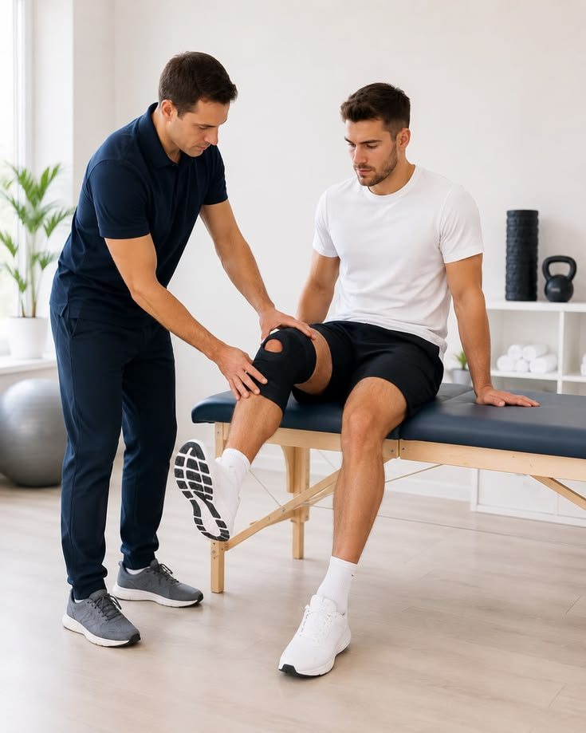

01
Pre-Surgical Preparation
Where appropriate, physiotherapy before surgery may focus on maintaining movement, strength and functional ability.
Individualised physiotherapy and rehabilitation support designed to help you progress safely before and after surgery.

Pre and post surgical rehabilitation is a structured physiotherapy approach that may support movement, strength, mobility and functional recovery around the time of surgery.
Your rehabilitation programme is planned according to your surgery, clinical condition, recovery stage and the guidance provided by your healthcare team.
Your current movement, strength and functional requirements are assessed before treatment.
Exercises and treatment can be adjusted according to your recovery stage and clinical needs.
The programme focuses on gradually improving movement, strength and everyday function.
Surgical rehabilitation is a personalised physiotherapy programme that supports recovery before and after an operation. Treatment and exercise selection depend on the type of surgery, your clinical condition and medical guidance.
Where appropriate, physiotherapy before surgery may focus on maintaining movement, strength and functional ability.
After surgery, rehabilitation may begin with carefully selected exercises and movement strategies according to clinical guidance.
As recovery progresses, rehabilitation may focus on strength, mobility, balance and return to everyday activities.
Your physiotherapist may focus on different rehabilitation areas depending on your surgery, recovery stage and individual goals.
Appropriate movement exercises may help you gradually regain mobility and confidence.
Progressive strengthening may be introduced according to your recovery stage.
Suitable exercises may be used to support balance, control and functional stability.
Where required, rehabilitation may include guidance to improve walking and movement patterns.
Exercises can be progressed towards everyday activities and individual functional goals.
Your physiotherapist may provide suitable exercises and guidance for continued progress.
Rehabilitation is adapted to your individual situation. Your physiotherapist works within appropriate clinical and medical guidance.
Exercises and activities can be progressed gradually according to your recovery stage.
Rehabilitation may focus on restoring appropriate strength and movement.
Treatment may help you work towards greater independence in daily activities.
Your programme is monitored and adjusted according to your response and recovery.
Your physiotherapist reviews your condition, movement and functional requirements.
A suitable rehabilitation programme is planned according to your recovery stage.
Exercises and movement strategies are introduced and progressed appropriately.
Your progress is reviewed and the rehabilitation programme can be adjusted when required.
Every surgical recovery is different. Your physiotherapist can provide guidance based on your individual assessment and medical advice.
Ask Our Team →In some situations, physiotherapy before surgery may be recommended to support movement, strength and functional preparation. This depends on your individual condition and medical guidance.
The timing varies according to the type of surgery, your health and your surgeon's instructions. Your physiotherapist will work within the recommended precautions.
Yes. Rehabilitation exercises are commonly progressed or modified as your strength, mobility and functional abilities change.
Recovery experiences vary. Your therapist will select appropriate activities and monitor your response during rehabilitation. Follow your medical team's instructions regarding pain and activity.
Depending on the surgery and stage of recovery, medical or surgical guidance may be required. Your physiotherapist will consider the information available before planning treatment.
Speak with our physiotherapy team to understand how a personalised rehabilitation programme may support your recovery journey.